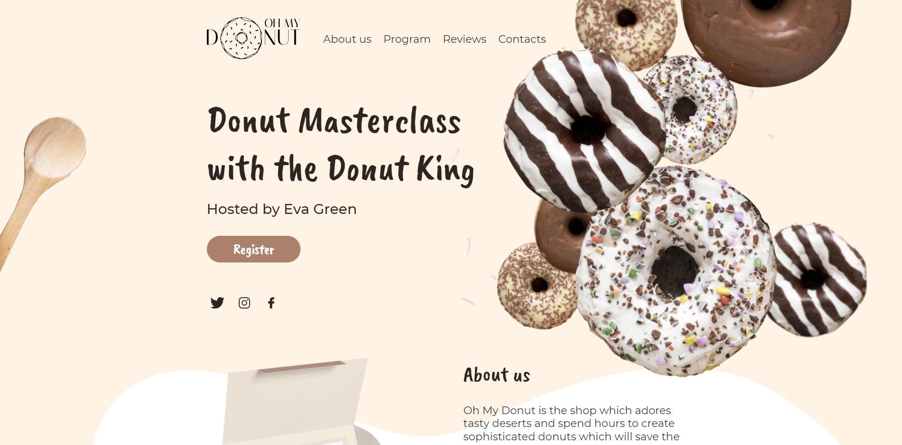
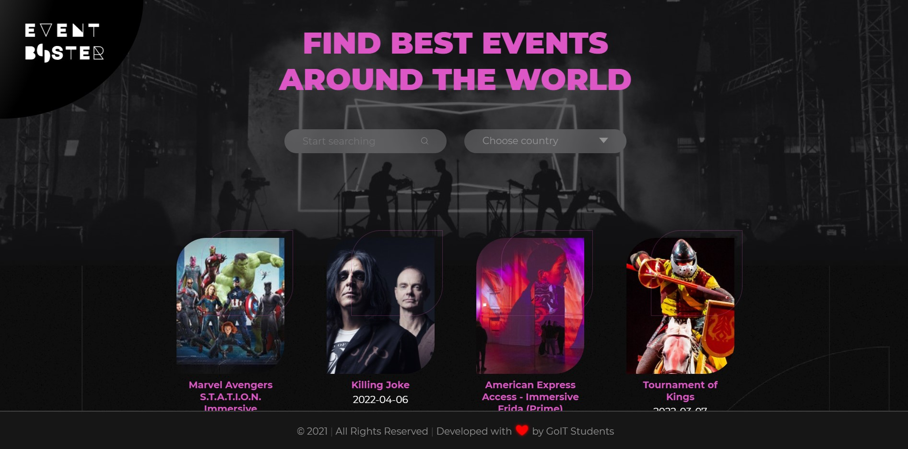
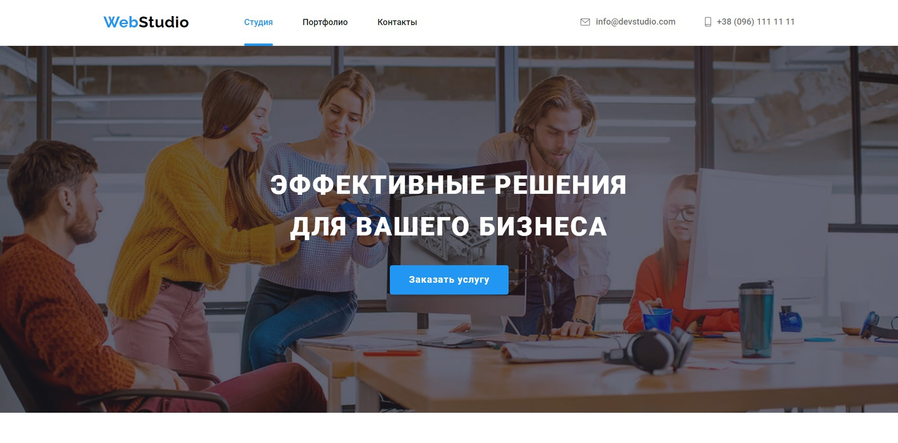
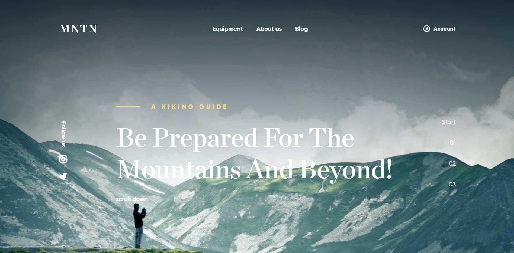

Про меня
-
Привет, я Тихон – Фул-стэк вэб разработчик из Киева.
Я интересуюсь программированием и всем что с этим связано. -
Я учусь на курсах
"Фул-стэк вэб
разработка"
в академии GoIT. -
Готов реализовывать отличные проекты
с прекрасными людьми.
Навыки
Я работаю с
-
Git
-
Node.js
-
React.js
-
Redux
-
JavaScript
-
HTML5
-
CSS3 and SASS
-
Figma
-
Photoshop
Портфолио
- 
Oh My Donut - Групповой проект
Oh My Donut - это веб-сайт группового проекта, в котором я выступал в качестве тим лида. Веб-сайт имеет аккуратный адаптивный дизайн. Он подчеркивает знания HTML и CSS (SASS) через его сложные формы, несколько уровневый фон и адаптивность. Мне, как руководителю группы, было поручено управлять своей командой, проводить онлайн-встречи, поддерживать каждого товарища по команде и отслеживать их индивидуальный прогресс. ..., Постановка задач, учитывая текущее состояние проекта, тем, кто выполнил свою часть и / или имеет больше свободного времени. Более того, создание стола Trello и управление им нахожилось под моей ответственностью. А также, я проверял каждый коммит и объединял новый код со старым. Я стремился помочь каждому члену группы в решении любых проблем, с которыми они сталкивались. Этот проект важен, так как заставил меня развивать не только важные технические знания в области git | групповой работы на GitHub, но и командный менеджмент, лидерские навыки, а также общению и поддержке.
- 
Event Booster - Групповой проект
Event Booster - еще один командный проект. Здесь я выступал как HTML, CSS (SASS) и JS. разработчик. В этой работе упор был сделан на JavaScript и связь с базой данных через Rest API. В этот раз я не только написал разметку хедера и футера, но и принял участие в разработке необходимого JS-кода для запросов на API. Я позаботился о том, чтобы работал поисковый ввод..., вместе с фильтром страны. Еще одна уникальная функция, которую я реализовал, - это кнопка прокрутки страницы вверх, которая появляется, когда пользователь прокручивает окно вниз. Хотя я не был руководителем группы в этом проекте, я все же помогал каждому товарищу по команде с их частью работы. К моему удовольствию, моя группа провозгласила меня «Техническим королем». Этот проект важен, поскольку демонстрирует широкий спектр навыков JavaScript. Кроме того, он подготовил меня к большой и трудоемкой работе, научив меня терпению, и решению проблем, и поспособстовал дальнейшему развитию внимания к деталям и творчества.
- 
Web Studio - Индивидуальная работа
Веб-студия - это двухстраничный сайт, представляющий местный бизнес по веб-разработке. Это был мой первый индивидуальный проект, который включает в себя все: HTML, CSS (SASS) и JS-кодирование. Он показывает обширные знания в этих областях. В частности, лучшие практики HTML и CSS использовались для изображений и значков. Изображения были оптимизированы и снабжены настройками "scrset" для обеспечения хорошего качества... на разный экранах. Спрайт SVG с оптимизированными значками SVG был создан для хранения множества векторных изображений. Все элементы имеют собственные стили CSS. Я лично отвечал за выполнение всех задач. Отличительной особенностью данного проекта является его способность хранить информацию, заполненную пользователем, во входных данных формы. Это делается путем сохранения текста в формате JSON в локальное хранилище. Это предотвращает нежелательное удаление информации в случае случайного отключения интернета. Кроме того, была реализована регулировка функции сохранения, чтобы ограничить нагрузку на браузер при помощи библиотеки «Лодаш». На второй странице "портфолио" веб-студии есть рабочие параметры фильтрации. Создав этот веб-сайт, я научился полагаться на себя, набрался терпения и развил исследовательские навыки.
- 
MNTN Лэндинг - Индивидуальная работа
MNTN - это проект лэндинговой страницы, ориентированный на привлекательный дизайн. Главная особенность этого веб-сайта - эффект параллакс-прокрутки фона. Я реализовал такой визуальный эффект с помощью ванильного кода JavaScript. Всю эту работу проделал сам. Помимо технического аспекта, этот проект дал мне возможность улучшить исследовательские навыки вместе с навыком решениея проблем.